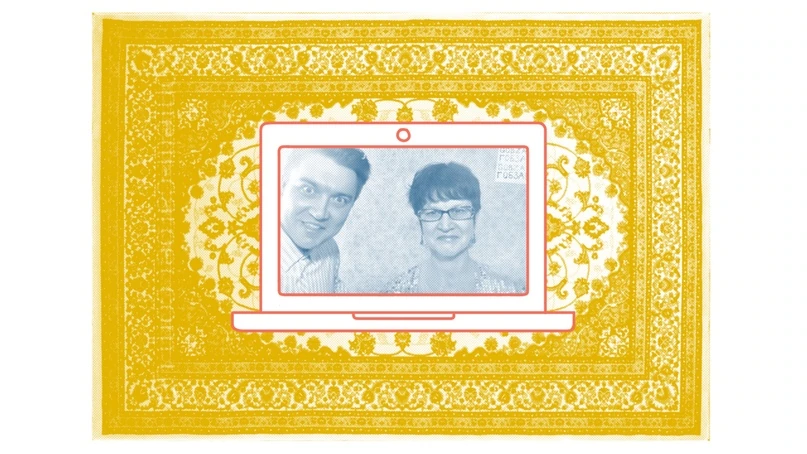
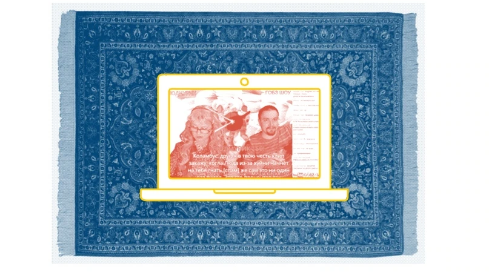

Данила Блюз рассказывает об очередном своем guilty pleasure — стримах Гобзавра и Людмурика. Что можно разглядеть в этой бездне безвкусицы, пьянства и скудоумия? Данила увидел здесь провинциальную трагедию — столкновение простых маргиналов с интернетом.
Помню, давным-давно я увидел на YouTube шоу под названием «Анекдоты от Людмурика». Перед камерой на фоне обоев стояла пожилая женщина, где-то за 50, а рядом с ней — великовозрастный балбес. Балбес назвал себя Андреем Гобзавром, женщину он представил как Людмила-Людмурик. Людмурик монотонно зачитывала анекдоты из специальной тетрадки, а Андрейка стоял рядом и отыгрывал персонажей истории, корчил рожи, а в финале натужно смеялся да еще и рассказывал смысл анекдота. Анекдоты эти были отчаянно несмешные, как ни старался Гобзавр оживить их своими комментариями и пантомимой.

Плюс — действие разворачивалось в крайне убогом антураже: линялые обои, приклеенная бумажка в углу с кривой надписью GOBZAVR. При этом сами герои старались на этом фоне выглядеть хорошо: на Андрее чистая рубашка, брюки, сам он причесан, Людмила всегда была накрашена, в каких-то вычурных платьях, в дешевой бижутерии, которой торгуют на базарах или в самых захолустных торговых центрах.
В этом всем было какое-то неуловимое, наивное очарование провинциальной безвкусицы. Именно это пытается повторить в своих клипах Саша Гудков. Только здесь все не выдумано, здесь все настоящее: это реальные люди, они думают, что делают «контент» со своими анекдотами, серьезно подходят к процессу, они, в отличие от Гудкова, не стебутся, а так живут.
Это все искренне, от чистого сердца, а оттого — завораживает и кружит голову, как взгляд в пропасть.
Прошло время, и я как-то потерял «анекдоты Людмурика» из виду. А теперь выяснилось, что парочка не отстает от трендов: они забросили неприбыльное шоу и ведут стримы под названием «ГОБЗ ШОУ». Итак, давайте поближе познакомимся с героями. Гобзавр — Андрей Яшин, 33 года, Людмурик — его мать, Людмила Яшина, 57 лет. На YouTube с 2013 года. Непосредственно стримами они занимаются с 2016-го.
Первые стримы были вполне себе приличные, Людмила так же читала анекдоты, Гобзавр так же кривлялся, на мат и оскорбления от «хейкеров и хацкеров» (два главных врага Людмурика — первые пишут гадости в комментах, ну и в принципе неугодные Людмиле персонажи, вторые — это те, кто вредит с помощью неведомых интернет-технологий, они постоянно обрушивают стримы, делают нарезки, подделывают компрометирующие телефонные разговоры) герои пытались как-то отшучиваться и переводить все в позитивное русло.

Но настал второй, как я его называю, золотой период «ГОБЗ ШОУ». Гобзавр быстро смекнул, что на анекдотах и прочей чепушне денег не заработаешь. Он понял, что народу нравится, когда его матушка выходит из себя, матерится или начинает реветь. В итоге Гобзавр начинал за деньги принимать разного рода «челленджи» — за определенную сумму зритель мог заказать для Людмилы любую пытку. Ей били об голову яйца, разрезали на ней ее любимое платье, ставили ногу на голову. Они с Гобзавром целовались взасос (о да, в шоу проскакивает много инцестуальных мотивов!) и много чего еще вытворяли. За деньги Гобзавр готов учинить со своей мамашей все что угодно!
При этом зритель заказывал ведущим выпивку: пиво, блейзер и шампанское. Самым козырным показателем любви к шоуменам было заказать им выпить бутылочку шампанского. Это стоит, кажется, четыре тысячи рублей. Сделав такой заказ, вы становитесь лучшим друганом Гобзавра. Не всегда героям удавалось выпить все, что поназаказывали им зрители. Людмила часто обпивалась до скотского состояния, блевала в таз, засыпала на стриме. Но еще чаще начинала материться и костерить Гобзавра на чем свет стоит. В последствии внимательные зрители уличили парочку в мухлеже, начали обвинять их в том, что они подменяют блейзер компотом, а иногда выпивают не все заказанное.
Но вернемся к челленджам. Местами было видно, что Людмурик слишком уж фальшиво плачет: она стала играть роль эдакого Пьеро, которого Арлекин-Гобзавр на потеху публике бьет дубинкой. Вскоре зритель раскусил и эту уловку, аудитории захотелось настоящих страданий Людмилы. Фанаты шоу с «Двача» узнали, что Людмила работает в каком-то санатории уборщицей за семь тысяч рублей. Они нашли группу этого санатория «ВКонтакте» и начали забрасывать ее порнографическими изображениями с Людмилой. Разумеется, картинки были фальшивыми, но администрации санатория такое внимание все равно не понравилось, Людмилу уволили безо всякого сожаления. Зрители получили обильную порцию слез и причитаний на стриме — бедная женщина сокрушалась о своей копеечной работе и разрушенной «репутации». При этом она искренне недоумевала, как кто-то может быть настолько жесток.
«Что я вам сделала плохого? Что вам от меня надо? Почему вы так ненавидите меня? Ну не нравится вам наше шоу, ну не смотрите вы его! Мы же стараемся радость нести, чтобы весело было, почему вы ненавидите нас?» — примерно это она восклицала, пытаясь услышать от жестокосердного интернета хоть какой-то вразумительный ответ. Но интернет в ответ только хохотал и продолжал осыпать Людмилу насмешками и гадостями.
Однажды Людмила спалила на стриме их адрес в Челябинске. Это добавило хлопот семейству Яшиных. Теперь «хейкеры» из местных начали периодически приходить к Гобзавру и то заливать дверь краской, то обрезать провода от интернета.
К сожалению, я потерял эту нарезку, но кто-то из внимательных хайлайтеров нашел стрим, на котором видно, как в какой-то момент Людмила сломалась после череды унижений на стриме. Бесчувственный Гобзавр продолжает хохмить, а Людмила сидит с пустым взглядом, по голове ее стекает яичная жижа с осколками скорлупы, и в какой-то момент она начинает безумно улыбаться. Такое чувство, что она уже окончательно перегорела и из неловкой тетки с анекдотами в тетрадке превратилась в то, чем она является сейчас, — циничную озлобленную хабалку, которая ненавидит своего сына.

Третий период, это уже непосредственно закат шоу. Людмила своим хамством и жадностью, а Гобзавр — лживостью и излишним заискиванием распугали всех топ-донатеров и сейчас довольствуются копейками, которые им подбрасывают их хейтеры. Челленджей уже нет, Людмила не позволяет глумиться над собой. Она причитает о своей несчастной доле и буквально молит бога, чтобы ее сын «сдох» или чтобы ее кто-нибудь забрал к себе.
И с одной стороны вроде бы и мерзко смотреть на это все. Пьяная бывшая уборщица, думающая, что у нее есть дар делать «установки» (это когда Людмила пронзительно глазеет в камеру и через нее насылает на хейтеров понос или еще чего похуже), пьяный балбес, который зарабатывает, выставляя на потеху публике свою мамашку, как цирковую жирафу, и их пьяный друг Фанфурик — все они матерятся и синячат, до отвращения буднично, с глупыми дрязгами, смешными скандалами и своими маленькими трагедиями.
Но в то же время и как-то жалко их. За несколько лет, хоть я и не задонатил им ни копейки и не написал ни одного комментария, я прирос душой к этому реалити-фрик-шоу. Я знаю, что отец Гобзавра, он же муж Людмилы, утонул пьяный. Что потом Гобзавра воспитывал жестокий дед-алкоголик, который избивал его. Свои ужасные платья и безвкусные дешевые украшения Людмила покупает в долг. А еще, как она недавно призналась, Людмурик собирает бутылки, потому что сын не дает ей денег. Когда Люда неподобающе ведет себя с донатерами, Гобз под столом щипает ее за ногу. Людмила плачет от боли, кричит, что у нее уже «вся нога почернела» от его щипков. При всем своем нарочитом хамстве, Люда чрезвычайно доверчива и ведется на любую лесть, чем многие пользуются. Она может часами болтать по телефону, делиться самыми сокровенными мыслями и секретами с какими-то людьми из интернета, которые сказали ей доброе слово. Уже несколько раз ее собеседники сливали записи этих разговоров, где Люда матом кроет людей, которые жертвовали ей немалые суммы то на платья, то на лекарства для глаз (глаза повреждены, кстати, из-за постоянных установок, которые она делает). Топ-донатеры со скандалом уходили, а Люда наивно пыталась врать, что ее голос нарезали и склеили те самые «хацкеры», чтобы ее подставить.
Весь этот провинциальный треш-бэкграунд мог бы стать хорошей пьесой Николая Коляды, где зачастую такие же мелкие никчемные людишки из уральской провинции страдают так же, как страдали герои греческих трагедий. Вроде бы и жалко их, и смешно одновременно. У Венедикта Ерофеева в его бессмертной поэме есть место, где он слушает рассказ Митрича о председателе, и там есть такие слова: «Надо чтить, повторяю, потемки чужой души, надо смотреть в них, пусть даже там и нет ничего, пусть там дрянь одна — все равно: смотри и чти, смотри и не плюй...» И еще: «Первая любовь или последняя жалость — какая разница? Бог, умирая на кресте, заповедовал нам жалость, а зубоскальства Он нам не заповедовал. Жалость и любовь к миру — едины. Любовь ко всякой персти, ко всякому чреву. И ко плоду всякого чрева — жалость».